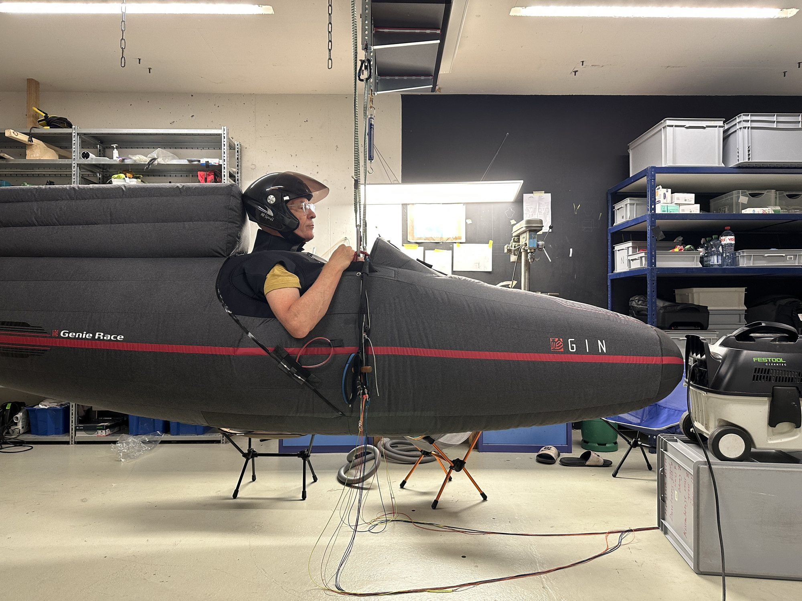
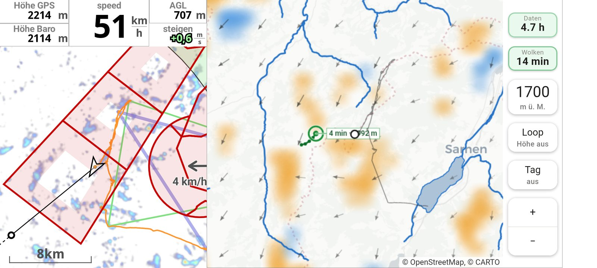
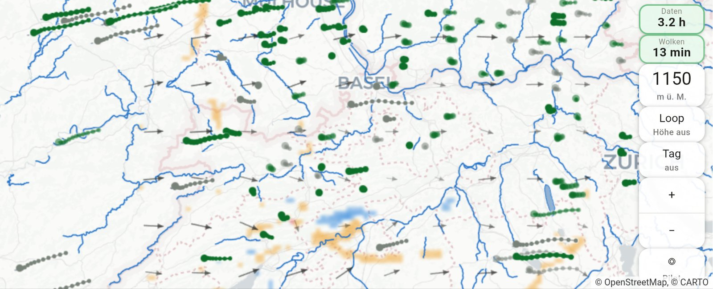

I fly paragliders and create software to understand flying better.Ich fliege Gleitschirm und kreiere Software, um das Fliegen besser zu verstehen.
And I publish texts based on it.Und ich publiziere Texte, die darauf basieren.

GIN Genie Race. Trying things out…GIN Genie Race. Dinge ausprobieren…
WritingTexte
Published writingPublizierte Texte
ArticleArtikelOnlineOnline
The invisible railway
How a capped dryline carried a paraglider 612 km. Twenty-five parameters matched an ordinary day; one did not — ground speed while climbing, 41.5 against 34.5 km/h. From there the piece follows wind shear beneath a capping inversion and Blackadar’s pendulum effect. It contains a forecast link for the Texas dryline.Wie eine gedeckelte Dryline einen Gleitschirm 612 km weit trug. Fünfundzwanzig Parameter entsprachen einem gewöhnlichen Tag; einer nicht — die Grundgeschwindigkeit im Steigen, 41,5 gegen 34,5 km/h. Von dort verfolgt der Text die Windscherung unter einer Sperrschicht und Blackadars Pendel-Effekt. Er enthält einen Forecast-Link für die Texas-Dryline.
Cross Country Magazine will run a piece about it on 10 September.Cross Country Magazine bringt am 10. September einen Text darüber.
One takes your own tracks. The other is a fixed collection of flights.Eines nimmt eigene Tracks. Das andere ist eine feste Sammlung von Flügen.
LiveLive
flyfaster
Compares pilots who flew in the same air, so what is left is the difference between the pilots, not between the days. Upload tracks, get a radar profile per pilot.Vergleicht Piloten, die in derselben Luft geflogen sind — was bleibt, ist der Unterschied zwischen den Piloten, nicht zwischen den Tagen. Tracks hochladen, Radarprofil pro Pilot.
A collection of Jura flights to study — no upload, the flights are already there. Pick one, for instance Sebastian Benz’s longest, and replay it: many data sources on one timeline, satellite clouds included, and a bar showing which section of the arc between La Dôle and Weissenstein the flight touched. Even with a simulated vario sound.Eine Sammlung von Jura-Flügen zum Studieren — kein Upload, die Flüge sind schon da. Einen auswählen, etwa den längsten von Sebastian Benz, und ihn abspielen: viele Datenquellen auf einer Zeitachse, Satellitenwolken inklusive, und ein Balken, der zeigt, welchen Abschnitt des Bogens zwischen La Dôle und Weissenstein der Flug berührt hat. Sogar mit simuliertem Vario-Sound.
“Google Maps for paragliding”„Google Maps fürs Gleitschirmfliegen“
Three attempts at the same problem, each on a different basis. Two dropped, one carried on.Drei Anläufe an derselben Aufgabe, jeder auf anderer Grundlage. Zwei verworfen, einer weiterverfolgt.
01
DroppedVerworfen
FAIplaner
Based on kk7 hotspots and Dijkstra.Basierend auf kk7-Hotspots und Dijkstra.
Private · Tailscale onlyPrivat · nur via Tailscale
windfieldmap
An in-flight tool showing the surrounding air and trajectories from satellite data. The idea: see the new clouds via satellite, assign each one a trajectory — a thermal — and derive from the wind data how long it would take me to reach it and what altitude I would have left. It runs on my Mac mini and reaches my phone over Tailscale, so there is nothing public to open.Ein Inflight-Tool zur Darstellung von Umgebungsluft und Trajektorien aus Satellitendaten. Die Idee: via Satellit die neuen Wolken sehen, ihnen je eine Trajektorie — einen Bart — zuordnen, und aus den Winddaten ableiten, wie lange ich zum Bart brauchen würde und welche Höhe ich dann noch hätte. Läuft auf meinem Mac mini und erreicht mein Handy über Tailscale — es gibt also nichts Öffentliches zu öffnen.
These days the picture gets faster. MTG-I2 launches on 27 August 2026 on an Ariane 62 and joins Meteosat-12 in geostationary orbit. Its imager scans the full disc every 10 minutes and, in rapid-scan mode, the upper quarter — Europe — every 2½ minutes. Once the satellite is in service, that is four times as many images to work a trajectory out of.Dieser Tage wird das Bild schneller. Am 27. August 2026 startet MTG-I2 auf einer Ariane 62 und stösst zu Meteosat-12 im geostationären Orbit. Sein Imager scannt die volle Scheibe alle 10 Minuten und im Rapid-Scan das obere Viertel — Europa — alle 2½ Minuten. Sobald der Satellit im Dienst ist, sind das viermal so viele Bilder, um eine Trajektorie daraus abzuleiten.

Taken in flight, because I could not read the number in the air. The label on the trajectory reads 4 min.Im Flug aufgenommen, weil ich die Zahl in der Luft nicht sehen konnte. Die Beschriftung an der Trajektorie zeigt 4 min.

How thermals that are no longer active could be shown: grey instead of green.Wie nicht mehr aktive Bärte dargestellt werden könnten: grau statt grün.
LiveLive
Jura-Konvergenz-Planer
Based on historical satellite data.Basierend auf historischen Satellitendaten.
A test bench for checking a widget: put it into a historical flight and see how it would have behaved in the air — second by second.Ein Prüfstand, um ein Widget zu prüfen: Man kann es in einen historischen Flug einsetzen und sehen, wie es sich in der Luft verhalten hätte — Sekunde für Sekunde.
Natural scientist; co-founder of several startups, often with IT at the centre. Paragliding gives the work its subject: build the tool, fly with it, write down what changed. And not only my own flights — I take other pilots’ apart in software, Kayrouz’s, Benz’s, Aeschbach’s and so on, to learn what actually happened in them.Naturwissenschaftler; Mitgründer mehrerer Startups, oft mit IT im Kern. Das Gleitschirmfliegen gibt der Arbeit ihr Thema: das Werkzeug bauen, damit fliegen, aufschreiben, was sich geändert hat. Und nicht nur die eigenen Flüge — die von anderen zerlege ich in Software, Kayrouz, Benz, Aeschbach und so weiter, um zu lernen, was darin wirklich passiert ist.